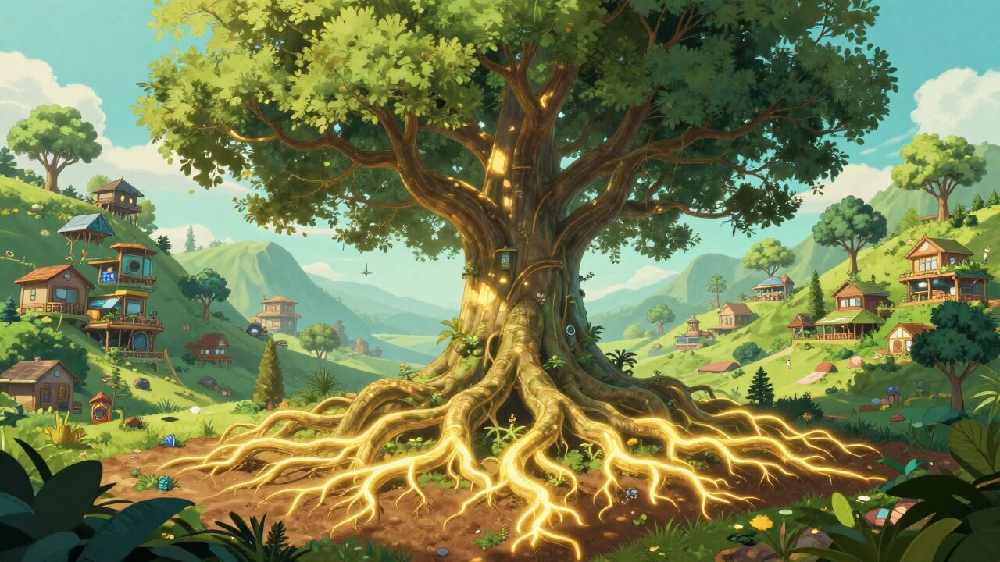
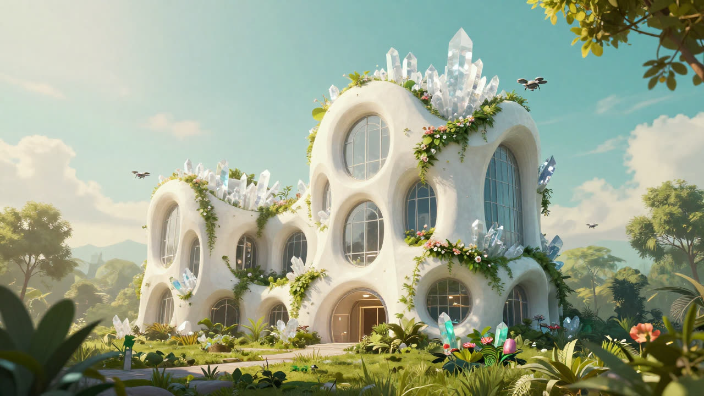

Corrida Leve
A gentle running companion (em português) that takes anyone from the couch to their first light runs — adaptive plans, no pressure, no ads. Installable as a PWA.
Open Corrida LeveCrafting products that grow with people.
We create software, health experiences, and intelligent systems with care, curiosity, and craftsmanship — designed to improve people's lives, today and for years to come.
Explore our workWe believe great products are cultivated, not manufactured.
Technology should remove unnecessary effort. Health should be sustainable. Software should continuously improve.
The best products don't simply solve today's problems — they evolve alongside the people who use them.
Our philosophy, already at work. Try them right here — no installs, no accounts.
A gentle running companion (em português) that takes anyone from the couch to their first light runs — adaptive plans, no pressure, no ads. Installable as a PWA.
Open Corrida Leve
A high-performance game running on our Rust-native engine, compiled to WebAssembly and rendered in your browser. The first real-world validation of the workshop's interactive stack.
▶ Play Z32The building blocks we share — free to use, inspect, and extend.

The core TypeScript utility toolbelt. Zero-dependency, generic, comprehensive — math, data structures, testing, and unified persistent storage for browser and Node.
github.com/andrers52/arslib →
Browser-native UI components, TypeScript-first. Shadow-DOM encapsulation and a mixin coordination system for gestures, pointers, and inter-component calls.
github.com/andrers52/ars-web-components →Every craft has its workshop. Ours happens to include autonomous software collaborators.
We're building an environment where people and intelligent systems collaborate to design, build, test, and continuously improve software. Not to replace creativity — to amplify it.

We automate implementation so people can focus on ideas. Build, test, and retry loops run autonomously — people define what, the workshop decides how. Humans approve specifications and validate behavior, not lines of code.

Every project strengthens the next. Reusable logic always flows upstream into the shared foundation — from the utility toolbelt and UI components to the engine and the deployed product.

Automation helps us move faster. Craftsmanship helps us move in the right direction. Every product is refined through observation, iteration, and care — not rushed to market. We believe lasting quality comes from thoughtful design and continuous learning.
Two paths, one philosophy.
We came from different worlds.
One of us spent three decades building software systems. The other has spent years helping people build healthier lives through movement.
At first glance those paths seem unrelated. To us, they lead to the same place: lasting progress comes from thoughtful systems — not unnecessary complexity.
Silver Studios exists to explore that idea through the products we create.
The name Silver Studios has a family origin.
Years ago, our daughter imagined becoming an artist. She translated our family name, Silva, into Silver — and dreamed of one day creating a studio under that name.
When we decided to begin this new chapter together, we asked if we could carry that dream forward.
Today, Silver Studios represents more than software. It's a place where different forms of creativity meet.
We're building this company slowly. Independently. One product at a time.
Because we believe meaningful things aren't rushed.